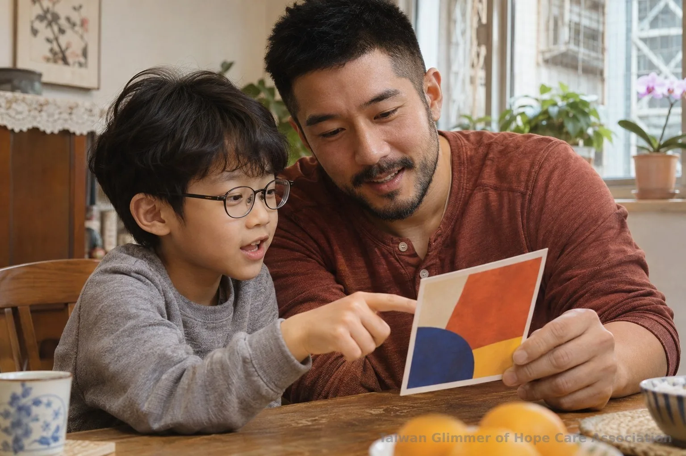
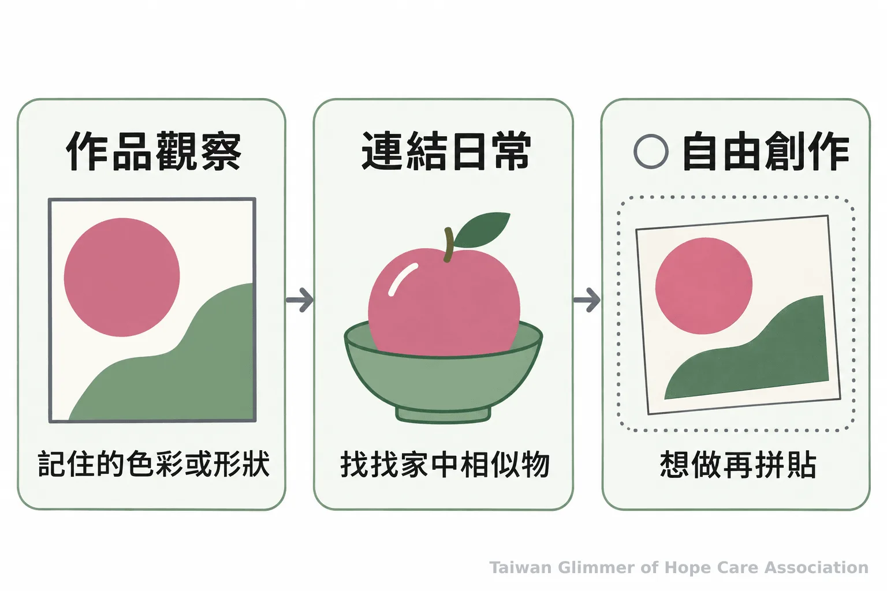
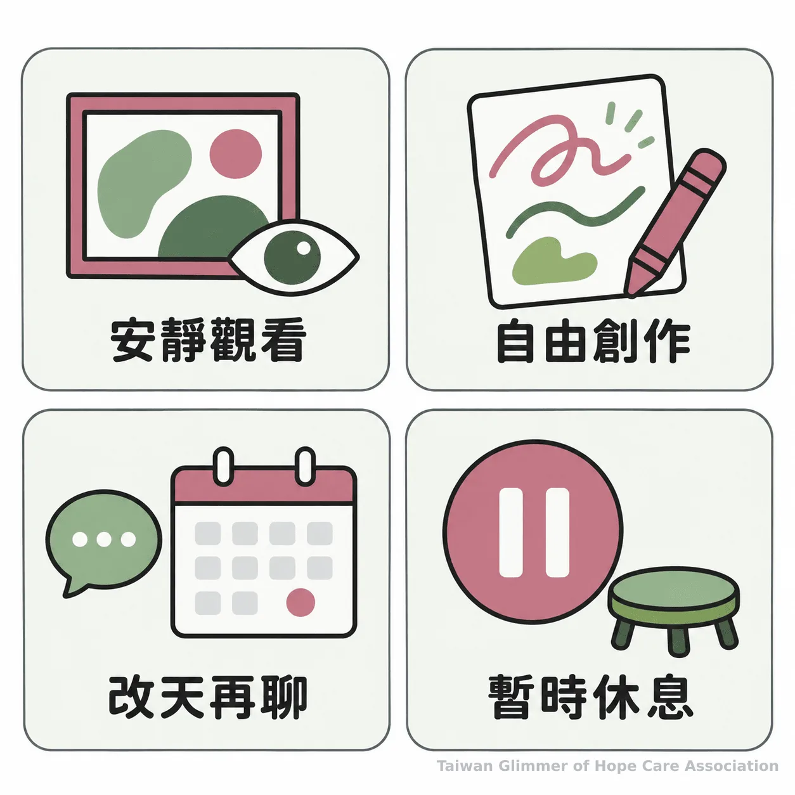

親子看展後怎麼延伸？在家用生活觀察做美感教育
看展回家後，從孩子記得的顏色、形狀或姿勢聊起，再把觀察帶進日常和自由創作。家長可用開放式提問，也能尊重孩子暫時不想分享。
系列標籤：在家也能做的藝術陪伴｜系列六之 5
展覽看完了，回家還能聊什麼？先問孩子記得哪個顏色、形狀或姿勢，不考作品名稱，也不急著解釋畫家意思。從孩子留下的細節開始，觀展就能延伸到生活與創作。
從一個記得的細節開始提問
先讓孩子挑一個記得的細節，再問他注意到什麼、為什麼記得；孩子可以決定從哪一幅作品談起。
孩子可能記得大片紅色、人物手勢，或只說「那張很圓」。可以問：「你還記得哪個地方？」「你看到什麼，讓你這樣想？」問完先聽，不把對話變成猜謎。
一次接一個問題就好。孩子回答後，大人可重述他注意到的細節，再問要不要看照片或展覽手冊。若孩子轉談別的事，就跟著話題走，不必把整場展覽重新考一遍。
史密森尼國家美國歷史博物館建議成人讓孩子描述所見、留時間觀察，再沿著孩子的話追問。這是博物館教育建議，不是對孩子效果的保證。遇到不確定的作品資訊，可以一起查找或先保留問題。
「你看到什麼，讓你這樣想？」（原文意譯：What do you see that makes you say that?，Sarah Erdman，史密森尼國家美國歷史博物館）

把展覽印象帶進日常和創作
把作品裡的顏色、形狀或姿勢連到身邊事物，再讓孩子選擇要不要畫、剪貼或只說說看。
可以問：「這個顏色讓你想到什麼？」「畫裡的姿勢像不像你做過的動作？」沿著孩子想到的日常事物聊，留意形狀、比較顏色或找相似處都可以；美感教育不必以完成一幅畫為目標。
孩子有興趣時，再拿出紙筆、色紙或黏土，重組記得的細節，不要求重畫原作。史密森尼博物館也建議以畫畫、寫故事或家中活動延伸觀察。
若孩子不想動手，可以翻照片、在路上找相似色彩，或就此停下。

不想分享時，讓對話停在孩子選擇的地方
接受孩子暫時不回答、不畫或想休息的選擇，讓觀展話題可以稍後再開始。
孩子說「不知道」，可以回應：「好，那我們先不想。」若他想聽大人說，就描述自己看到的線條或顏色。回應作品時，描述「你用了好幾種藍色」，比評分更具體。
更多回應作品評價的方式，可參考 appi.news 的孩子問作品好不好時，家長如何回應。
藝術陪伴是共同觀察和創作，不能從畫作判定孩子的心理狀態或是否受虐，也不等同藝術治療。若孩子談話中出現安全疑慮，大人不要從作品推論，也避免追問細節；可以向衛生福利部113保護專線諮詢或通報。衛福部說明，113為24小時全年無休專線；若有立即人身安全危險，先撥110。

微光如何把觀展延伸到藝術陪伴
台灣微光希望關懷協會在板橋明穗、中壢宣愛與瑞芳愛鄰三個據點，每個月各安排一堂藝術陪伴課，也曾帶中壢據點的孩子參觀波特羅特展。課程從藝術家作品帶出主題，不設標準答案，也不比較畫得好不好；瑞芳曾以夏卡爾「夢想花園」為主題，板橋以馬蒂斯拼貼做雜誌封面，中壢則以「心情的顏色」引導孩子畫秘密花園。
照片與紀錄，請見〈帶中壢據點的孩子，走進波特羅的圓潤世界〉。
- 從孩子記得的顏色、形狀或姿勢開始，不考作品名稱。
- 提問後先聽，創作可選擇參與，也可以暫停。
- 作品不能用來判定心理狀態或受虐；有兒少安全疑慮可洽113，立即危險撥110。
常見問題：親子看展後可以怎麼聊？
從孩子主動記得的一個畫面開始，問一個沒有標準答案的問題，讓孩子決定談多久。
常見問題
Q1：孩子只記得顏色，沒有記得作品名稱，還能聊嗎？
可以，顏色、形狀或人物姿勢都能成為起點。
Q2：家長不懂藝術，怎麼陪孩子看？
請孩子說說看到什麼；不確定時一起查展覽說明。
Q3：孩子不願意畫畫，要怎麼延伸看展？
聊天、看照片、找相似顏色或休息都可以。
Q4：孩子說不出理由，大人要繼續追問嗎？
不必追問，接納「不知道」或讓對話停下來。
Q5：從孩子的畫能判斷他的心理狀態嗎？
不能。若有安全疑慮，可撥113諮詢，立即危險先撥110。
回家後可以問：「你還記得哪個顏色或形狀？」讓孩子選擇要說、要畫，或暫時不談。
參考文獻
- Sarah Erdman (2014). Helping kids fall in love with non-interactive museum exhibitions. National Museum of American History, Smithsonian Institution. https://americanhistory.si.edu/explore/stories/helping-kids-fall-love-non-interactive-museum-exhibitions
- Cynthia Raso (2013). Top tips for a rewarding museum visit with kids. National Museum of American History, Smithsonian Institution. https://americanhistory.si.edu/explore/stories/top-tips-rewarding-museum-visit-kids
- 衛生福利部保護服務司 (2017，更新於2026). 113保護專線介紹- 保護服務司. https://dep.mohw.gov.tw/DOPs/cp-1183-6499-105.html
本文同步刊於 appi.news。